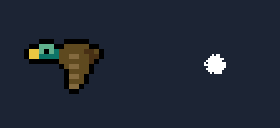

SpriteAnimation
Cómo animar sprites en Java, con el código bien organizado. Material para 2º de DAM.

MVP, interfaces e inyección de dependencias
El documento para alumnos, con la demo de animación de sprites.
Repositorio en GitHub
El código de la demo, con sus pruebas y cómo ejecutarla, las hojas de sprites y las decisiones de diseño.